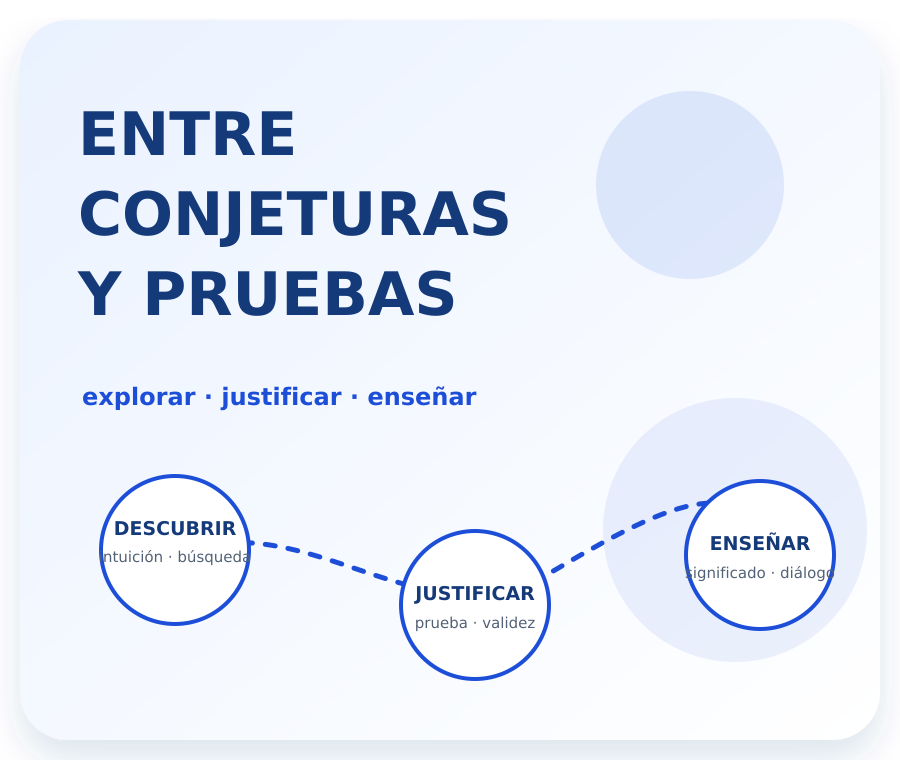
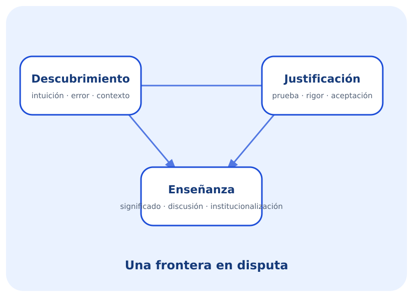

Cómo aparece una idea
Incluye intuiciones, analogías, creatividad, errores y correcciones, además de condiciones psicológicas, históricas y sociales.
Palabra clave: génesis.
Cápsula de aprendizaje · Profesorado Universitario en Matemática · UNCo
Descubrimiento, justificación y responsabilidad epistemológica en la enseñanza de la matemática.
Una idea puede nacer entre ejemplos, intuiciones y errores; después necesita ser comunicada, discutida y justificada. Esta cápsula invita a interrogar qué ocurre cuando esos procesos llegan al aula y cuando una IA participa del diseño didáctico.

Antes de explorar
La cápsula acompaña el Trabajo Práctico N.º 6. No reemplaza las lecturas: organiza problemas, contrastes y herramientas para elaborar una posición propia.
¿Qué matemática enseñamos cuando mostramos únicamente los resultados ya justificados y ocultamos la búsqueda que los hizo posibles?
Navegación no lineal
Podés comenzar por cualquier nodo. Para completar el recorrido, visitá los cuatro: cada uno aporta una pieza necesaria para la actividad final.
Nodo 1 · Reichenbach
¿Debe la epistemología estudiar cómo se generan las ideas o solamente cómo se justifican?
Incluye intuiciones, analogías, creatividad, errores y correcciones, además de condiciones psicológicas, históricas y sociales.
Palabra clave: génesis.
Incluye demostraciones, inferencias lógicas, reglas de evidencia y criterios de aceptación o rechazo.
Palabra clave: validez.
Mientras escuchás, registrá una diferencia y una relación entre ambos contextos.
Reichenbach distingue dos contextos. El contexto de descubrimiento reúne intuiciones, analogías, errores, correcciones, creatividad y condiciones históricas o sociales. El contexto de justificación reúne demostraciones, inferencias, criterios de aceptación y formas racionales de validar un conocimiento. La distinción permite ordenar el análisis, pero la educación matemática abre una pregunta: ¿podemos comprender la enseñanza y el aprendizaje si dejamos fuera los procesos por los que se construyen significados?
| Pregunta | Descubrimiento | Justificación |
|---|---|---|
| ¿Qué procesos incluye? | ||
| ¿Qué disciplina los estudiaría según Reichenbach? | ||
| ¿Cómo aparece en una clase? |

Nodo 2 · Críticas del siglo XX
¿Puede evaluarse una teoría sin considerar los marcos históricos, las prácticas y las rupturas que hicieron posible su producción?
La actividad señala que los criterios de justificación dependen de paradigmas históricos.
La historia real de la matemática muestra una interacción constante entre descubrimiento y justificación.
Cuestiona la existencia de reglas metodológicas universales.
El conocimiento no avanza de modo continuo y acumulativo: las rupturas implican cortes con formas previas de pensamiento.
El video no agrega una teoría nueva. Reorganiza visualmente la tensión planteada por la actividad para que puedas detenerte en cada pasaje.
No se trata de elegir automáticamente un extremo. Escribí en la bitácora qué debería conservar una posición útil para la formación docente.
Nodo 3 · Sierpinska y Lerman
¿Qué queda invisible cuando el aprendizaje se reduce a recibir conocimientos ya formalizados?
Los estudiantes no acceden de manera directa al conocimiento formalizado. Construyen significados mediante ejemplos, conjeturas, discusión y negociación.
Los procesos asociados al descubrimiento adquieren relevancia epistemológica en el ámbito educativo.
Toda práctica educativa presupone una epistemología, incluso cuando no se la enuncia.
Decisión de diseño: esta secuencia sintetiza procesos nombrados en la actividad. No se atribuye como modelo cerrado a un autor particular.
Elegí una clase de matemática que recuerdes y preguntate:
Solo resultados justificados: puede reforzar una matemática cerrada, acabada y ahistórica.
Búsqueda sin validación: puede dejar sin resolver cómo se establecen criterios compartidos.
Articulación: permite valorar la exploración sin renunciar al rigor.
Nodo 4 · Prompt, perspectiva y responsabilidad
¿Qué concepción de matemática aparece cuando pedimos una actividad “como experto” sin explicitar nuestros supuestos?
Elegí un mismo tema, nivel y contexto. Después construí dos pedidos diferentes para comparar las respuestas de una IA generativa.
Solicita una actividad didáctica sin explicitar una perspectiva epistemológica.
Actividad interactiva
Leé cada situación y elegí la interpretación que mejor recupera los problemas de la actividad. La devolución explica el encuadre; no reemplaza tu argumentación.
Escritura personal
Las notas se guardan únicamente en este navegador y en este dispositivo. No se envían a ningún servidor.
Pausa reflexiva
¿Qué parte de una clase de matemática suele quedar fuera cuando solo observamos el resultado final?
Bibliografía y créditos
La actividad recupera la distinción de Hans Reichenbach y las críticas asociadas a Thomas Kuhn, Imre Lakatos, Feyerabend y Gaston Bachelard.
El trabajo se elaboró sobre la base del trabajo de Maximiliano Seguel (2025), según se declara en el documento proporcionado.
Responsable docente: Lucas Colipe.
La organización didáctica, el código, las ilustraciones, las narraciones automatizadas y el microvideo fueron producidos con asistencia de inteligencia artificial generativa y revisados para mantener fidelidad al material proporcionado.
La IA no sustituye la lectura de la bibliografía ni la elaboración argumentada de los estudiantes.